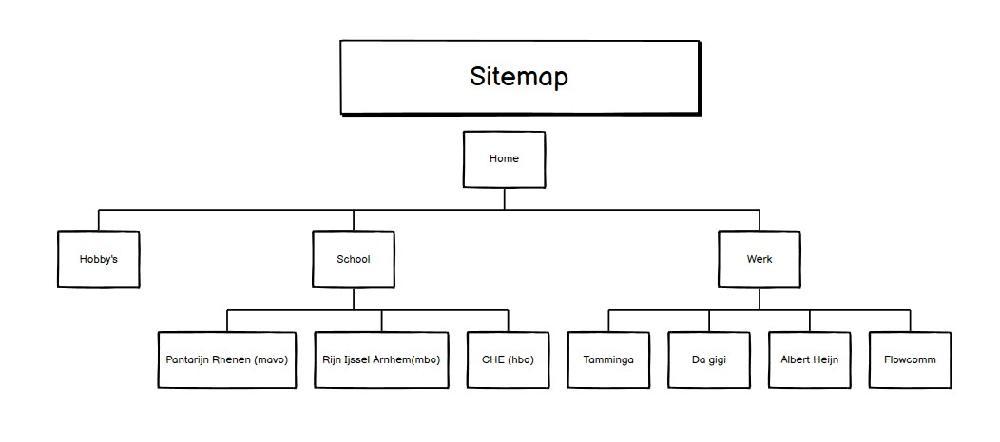
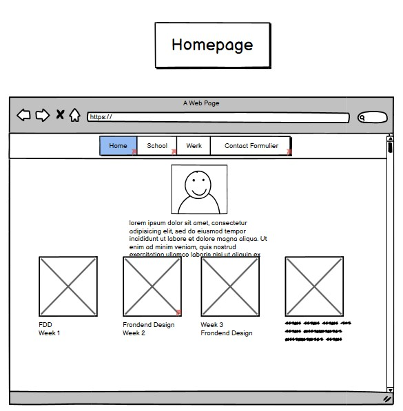
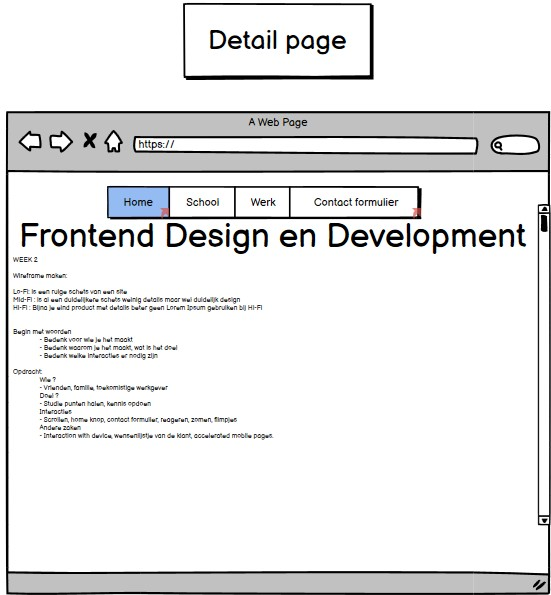

Tijdens week 2 heb ik een wireframe gemaakt in Balsamiq.
Een wireframe is een schets om een beeld te krijgen hoe jou website eruit kan zien.
Normaal gebruik je 3 verschillende gradaties voor een wireframe namelijk:
De fi in lo-fi, mid-fi en hi-fi staat voor fidelity. Een lo-fi wireframe is een ruige schets van een potentiële website/webpage. Bij een Lo-Fi schets wordt geen kleur gebruikt echte tekst is optioneel maar ook dit hoeft niet bij een lo-fi schets.
Bij een mid-fi wirefrfame is er al een duidelijkere design gecreëerd met weinig details. Bij een hi-fi wireframe is het product al bijna klaar, de wireframe bevat al veel details waaronder foto’s en tekst. Voor mijn website heb
ik alleen een lo-fi en hi-fi wireframe gemaakt. Ik heb de lo-fi wireframe gemaakt in balsaqiq en de hi-fi wireframe in Figma.
Op deze webpagina ga ik het hebben over mijn lo-fi wireframe die ik heb gemaakt in balsamiq. Ik heb als inspiratie de website van een vriend van mij gebruikt. Dit is de site die ik als inspiratie bron heb gebruikt. Ik heb als eerste een sitemap gemaakt van de web pagina's om zo te zien hoe ik ze met elkaar ga linken. Dit helpt om te visualiseren hoe ik de web pagina's in contact ga brengen met elkaar.
Daarna ben ik begonnen met het opzetten van mijn homepage. Ik heb hier gekozen om een overzichtelijke pagina te maken met niet al te veel tekst. Bij mijn homepage zie je foto van mij, met daaronder een aantal foto's die als linkjes dienen om naar bepaaldeonderwerpen te gaan (Introductie,Balsamiq,Figma,etc)
Mijn detail pagina is ook best simpel. Ik gebruik een titel bovenaan de pagina, en daaronder plak ik mijn aantekeningen die ik tijdens de lessen heb gemaakt.
Ik heb ook een simpele contact formulier gemaakt die overzichtelijk is.
Een lo-fi schets is belangrijk om een idee te krijgen hoe de uiteindelijke website eruit kan zien. Je kan een lo-fi schets ook gebruiken om een UX test mee uit te voeren
De volgende keer als ik een website ga maken zal ik balsamiq serieuzer nemen. Ik heb mijn schets te makkelijk gemaakt en daar kwam ik pas achter tijdens het ontwerpen van mijn hi-fi pagina.